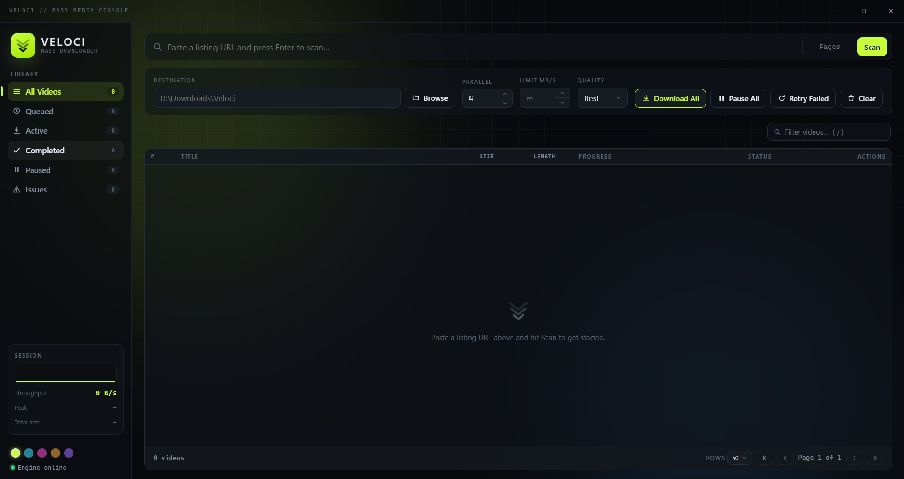

Point it at a page.
Walk away with everything.
Veloci scans listing and gallery pages, builds a persistent download queue, and pulls every video down in parallel through a yt-dlp-powered engine. Give it a page, or a whole range of them, and manage the rest from one queue.
Built for bulk jobs, not one video at a time
Every control in the app is there because a queue of hundreds of videos needs it. Nothing here is decorative.
Multi-page scanning
Scan a single page or a full range like 1-20 in one go, and let it discover every video across all of them.
Concurrent downloads
Configurable parallelism with an optional per-download speed cap, so one job never chokes the rest of your connection.
Quality selection
Best down to Worst, with a direct CDN fast-path that skips re-encoding wherever a site exposes real per-quality files.
Pause / resume / cancel
Per video or across the whole queue. IDM-style control over every job, at any point, without losing progress.
Duplicate detection
A SQLite-backed queue remembers what's already been downloaded across sessions, so re-scanning never re-queues known videos.
Rich metadata
Thumbnails, titles, duration, and file size are probed and streamed into the queue as they resolve.
Search, filters, pagination
Find anything in a queue of hundreds of videos without the UI breaking a sweat.
Themed UI
A custom dark "glass" interface with five accent themes, built from scratch. No OS-native form controls.
One pipeline, four stages
The same loop runs whether you paste one page or a range of twenty.
Scan
Point it at a listing page or a page range. It crawls and discovers every video.
Queue
Every video lands in a persistent, SQLite-backed queue. Duplicates are skipped automatically.
Fetch
The yt-dlp-powered engine pulls each item down in parallel, at the quality you picked.
Save
Lands in your chosen folder, marked complete, and remembered for next time.
Five accent themes. Try them right here.
This isn't a preview graphic: these swatches are the app's real theme tokens. Pick one and this whole page recolors, scrollbar included.
No OS-native form controls
Every dropdown, button, and progress bar is hand-built for this theme. This is an actual screenshot, not a mockup.

A Rust shell, a Python engine, one queue
The desktop shell and the download engine are two processes that talk over stdio. Neither one needs the other's runtime installed on the machine that runs it.
Tauri 2 + Rust
Frameless window, custom titlebar, and process lifecycle: it starts, supervises, and kills the engine's process tree.
Python + yt-dlp
httpx and selectolax do the crawling; yt-dlp does the fetching. Frozen with PyInstaller into a Tauri sidecar for distribution.
SQLite queue
Every job, status, and piece of metadata survives a restart, which is what makes duplicate detection possible.